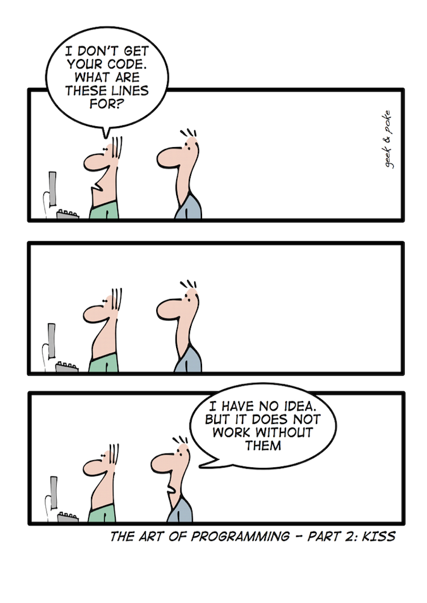

Problem Solving
{kind=link}
As previously mentioned problems have been around forever. The use of a computer to help in solving problems is new but computers do not solve problems, people still solve problems. Computers can be used to aid in solving problems but they are just a tool. People have been creating tools to help them solve problems for 1,000’s of years. The key to remember is that a computer is just a tool, just like a hammer is a tool to help people put nails in a board.
My father is a joiner by trade but worked in construction, building houses when he first imigrated to Canada. He has often told me stories of the “good old days” when they built houses completely with hand tools (using no electricity). They use to have competitions to see who could be the most accurate on estimating the length of a board, by cutting it first and then measuring it. They were usually within less than 1⁄2 inch (half the width of your thumb on a board 8 or 10 feet long!). It use to take dozens of men months to build a house this way. Then power tools were developed (electric drills, power saws, nailing guns, …). Now a house can be built by a fraction of the men it use to take, in a fraction of the time. Power tools have revolutionized the housing industry.
Computers have also revolutionized many of the ways people solve problems, as compared to the past. The first modern electronic computer the ENIAC was built to calculate tables for firing artillery shells. (Some, and maybe correctly, argue that the first electronic computer was actually the Colossus). The ENIAC was developed because it took too long and there were too many mistakes when people were doing the mathematics to calculate the firing tables by hand. The ENIAC could do the calculations in 30 seconds that it would have taken one person 20 hours to do! Today the same book of firing tables could be produced in a modern computer in a few seconds!